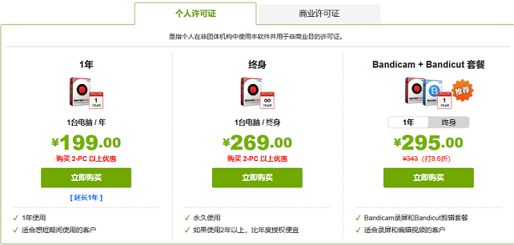

资源列表
-
7-Zip
它是民用场合中压缩率最高的软件之一。
能够充分利用CPU和内存性能，只要硬盘读写不瓶颈。
平台支持极广，主流的x86/amd64/arm64全部支持，甚至还支持被业界弃用的32位arm。
Windows最低支持到24年前的Windows 2000，Linux各发行版和macOS也均支持。
极为丰富的命令行参数，在脚本中调用非常方便。
体积非常小，核心部分只有几百KB。
开源无广告。社区的衍生版本7-Zip ZS还额外加速了对zstd的支持。
唯一缺点就是Windows下的软件原生界面比较丑，不过这不重要，
反正这种软件也不会盯着它的UI去看，大部分情况都通过右键快捷菜单或者命令行调用。
-
Bandicam
Bandicam（班迪录屏）一款简单好用的电脑屏幕录制软件，录屏幕，录游戏，录视频的功能强大的录屏工具，比起其他软件其性能更加卓越。
与其他软件相比，用 Bandicam 录制的视频大小更小，不仅保证原文件的质量。
下载免费版，可录制时间最长为10分钟，录制视频打上（www.BANDICAM.com）水印。
购买 Bandicam 授权，能够永久使用无功能限制的正式版。
OBS操作比较复杂，不适合新手，并且录制那些特效较多的3D游戏会卡顿，所以说新手最好用bandicam。
虽然bandicam虽然录制游戏不会卡，但是文件偏大，只能说各有所爱吧。
考虑到有些经济困难的人，小编在下方放了注册机，快去看看吧！
-
Bandicam注册机
我们都知道，Bandicam的注册码老贵老贵了！（如下图）
所以，我给大家带来了注册机！
你可以点击这个框去下载注册机！